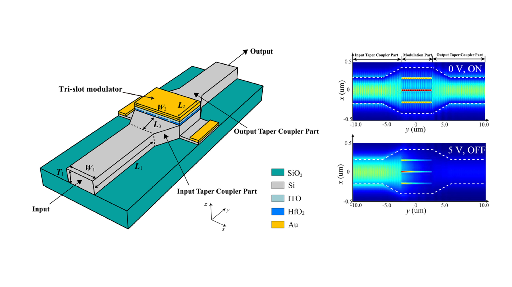
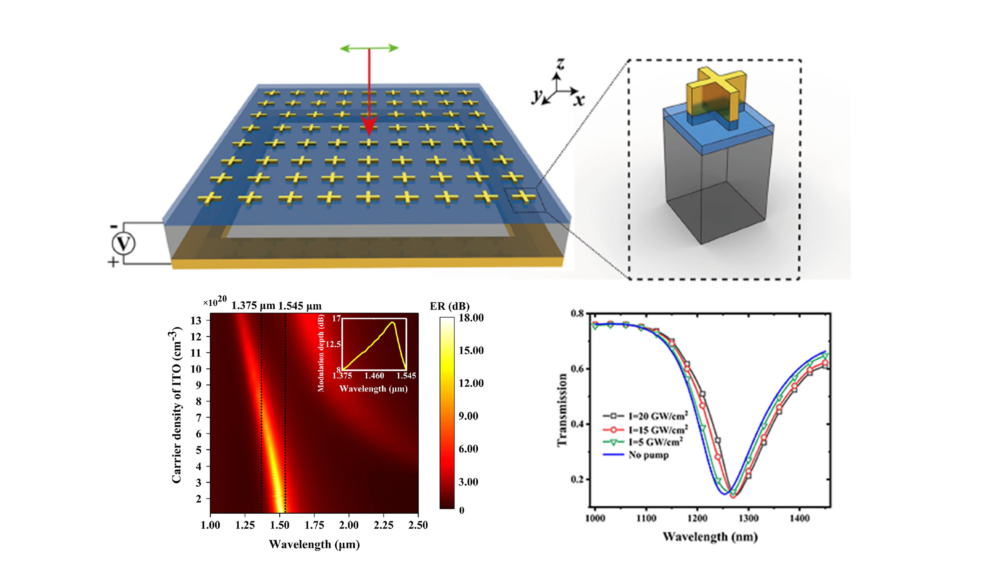
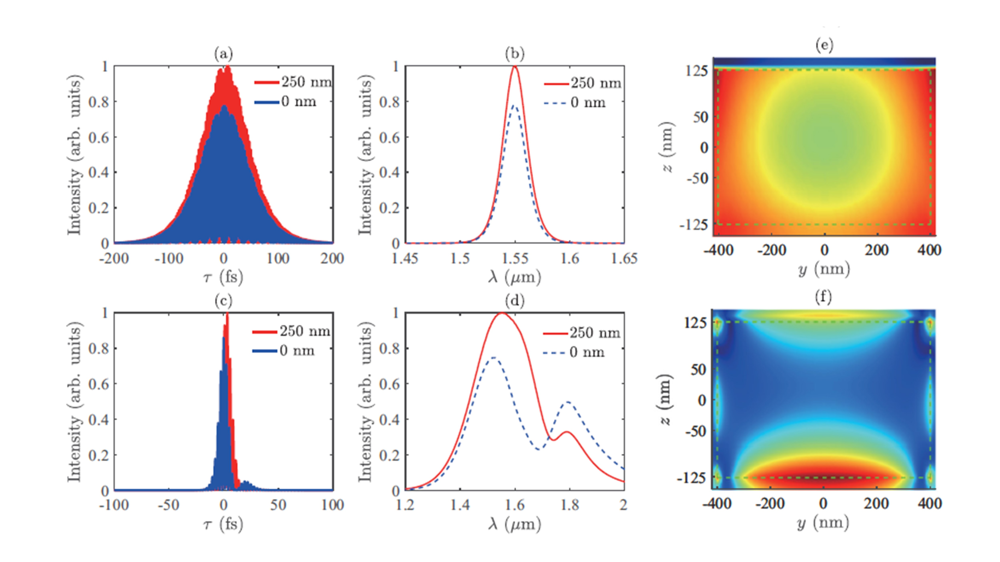
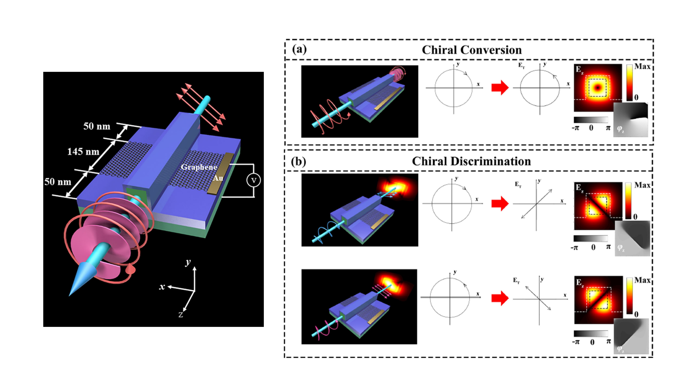
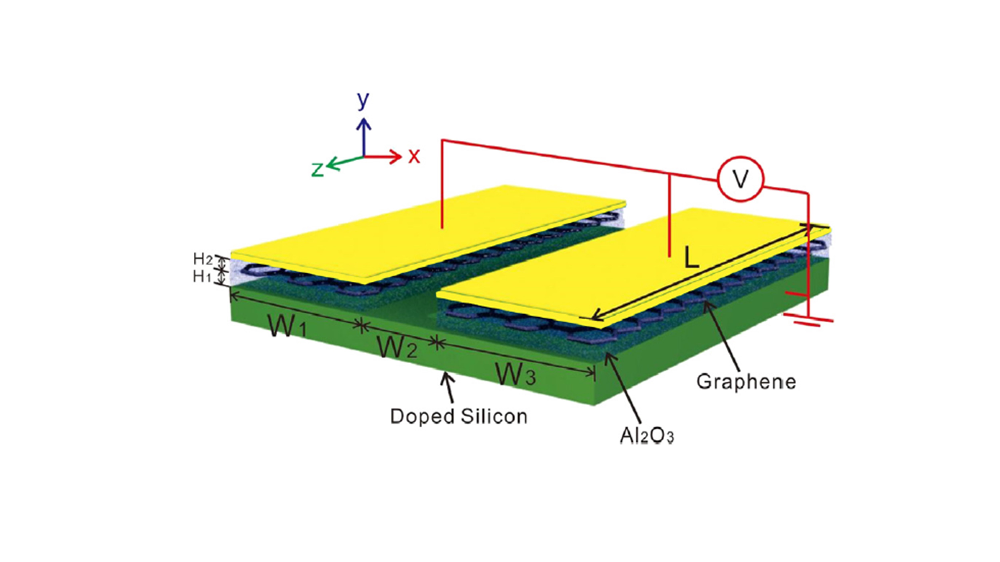
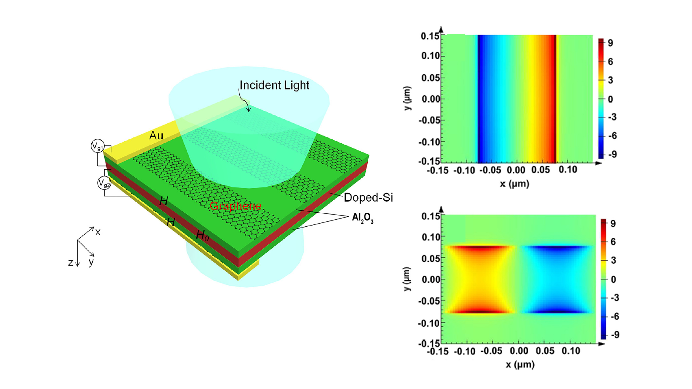

Publications-Ze Tao Xie
Visit latest publications on Google Scholar
Review Paper
Epsilon-Near-Zero Photonics: Infinite Potentials
Jiaye Wu, Ze Tao Xie, Yanhua Sha, H. Y. Fu, and Qian Li
Photonics Research 9(8), 1616-1644 (2021) [pdf]
Journal Papers
|  | 8. Ultrafast dynamic switching of optical response based on nonlinear hyperbolic metamaterial platform |
7. Comparison Study of Multi-Slot Designs in Epsilon-Near-Zero Waveguide-Based Electro-Optical Modulators |
 |
6. Numerical investigations on the cascaded high harmonic and quasi-supercontinuum generations in epsilon-near-zero aluminum-doped zinc oxide nanolayers |
|  | 5. Tunable Electro- and All-Optical Switch Based on Epsilon-Near-Zero Metasurface |
|  | 4. Comparative study on epsilon-near-zero transparent conducting oxides: High-order chromatic dispersions and modeling of ultrashort pulse interactions |
|  | 3. Selective angular momentum generator based on a graphene hybrid plasmonic waveguide |
|  | 2. Variable optical attenuator and modulator based on a graphene plasmonic gap waveguide |
|  | 1. Tunable metasurface with two non-coplanar and inter-perpendicular graphene nanoribbon arrays for the coupling between localized and delocalized surface plasmon polaritons |
Conference Papers
7. Dynamic Epsilon-Near-Zero Wavelength Tuning and Switching Properties of Hyperbolic Metamaterials
Ze Tao Xie, Jiaye Wu, Yanhua Sha, H. Y. Fu, and Qian Li
Asia Communications and Photonics (ACP 2021), 24-27 Oct 2021, Shanghai, China, T4A.173
[pdf]
6. High-Order Harmonic Generations in Epsilon-Near-Zero Aluminum-Doped Zinc Oxide Nanopyramid Array
Jiaye Wu, Ze Tao Xie, H. Y. Fu, and Qian Li
The 12th International Conference on Advanced Infocomm Technology (ICAIT), 23-25 Nov 2020, Macau, China, T034
[pdf]
5. Giant Enhancement of Third- and Fifth-Harmonic Generations in Epsilon-Near-Zero Nanolayer
Ze Tao Xie, Jiaye Wu, H. Y. Fu, and Qian Li
Asia Communications and Photonics (ACP 2020), 24-27 Oct 2020, Beijing, China, M4A.15 [pdf]
4. Tunable Electro-Optical Metasurface Based on an Ultra-Strong Coupling Epsilon-Near-Zero System
Ze Tao Xie, Jiaye Wu, H. Y. Fu, and Qian Li
2020 Frontiers in Optics/Laser Science Conference (FiO/LS 2020), 14-17 Sep 2020, Washington, DC, USA, JTu1A.41 [pdf]
3. Optimization of Slot Waveguide Modulator Based on Epsilon-Near-Zero Effect
Yanhua Sha, Jiaye Wu, Ze Tao Xie, and Qian Li
2020 Frontiers in Optics/Laser Science Conference (FiO/LS 2020), 14-17 Sep 2020, Washington, DC,
USA, JTu1B.9 [pdf]
2. Large and Complex Chromatic Dispersion Profile in Epsilon-Near-Zero Aluminum-Doped Zinc Oxide
Jiaye Wu, Ze Tao Xie, Yanhua Sha, H. Y. Fu, and Qian Li
2020 Frontiers in Optics/Laser Science Conference (FiO/LS 2020), 14-17 Sep 2020, Washington, DC, USA, JTu1A.34 [pdf]
1. Coupling of a metasurface with two non-coplanar and inter-perpendicular graphene nanoribbon arrays
Feng Chao Ni, Ze Tao Xie, Qi Chang Ma, Jin Tao, Jian Li, Hongyun Meng, and Xu Guang Huang
The 13th Pacific Rim Conference on Lasers and Electro-Optics (CLEO-PR 2018), 29 Jul-3 Aug 2018, Hong Kong, China, W3A.148 [pdf]
Patents
Adjustable double-control optical switch based on near-zero dielectric constant indium tin oxide and using method
基于近零介电常数氧化铟锡的可调双控光开关及使用方法
Qian Li, Ze Tao Xie, Jiaye Wu
CN111290192A, China PatentTunable refracting index sensor based on metasurface with graphene nanoribbon arrays
基于石墨烯超表面结构的可协调折射率传感器
Ze Tao Xie, Feng Chao Ni, Qi Chang Ma, Guanwen Zhao, Xu Guang Huang, Jin Tao
CN207850922U, China PatentAdjustable optical attenuator and device based on metasurface with non-coplanar graphene nanoribbon
基于异面双石墨烯纳米带的可调光衰减器及装置
Xu Guang Huang, Feng Chao Ni,Qi Chang Ma, Ze Tao Xie, Jin Tao
CN108267869A, China Patent